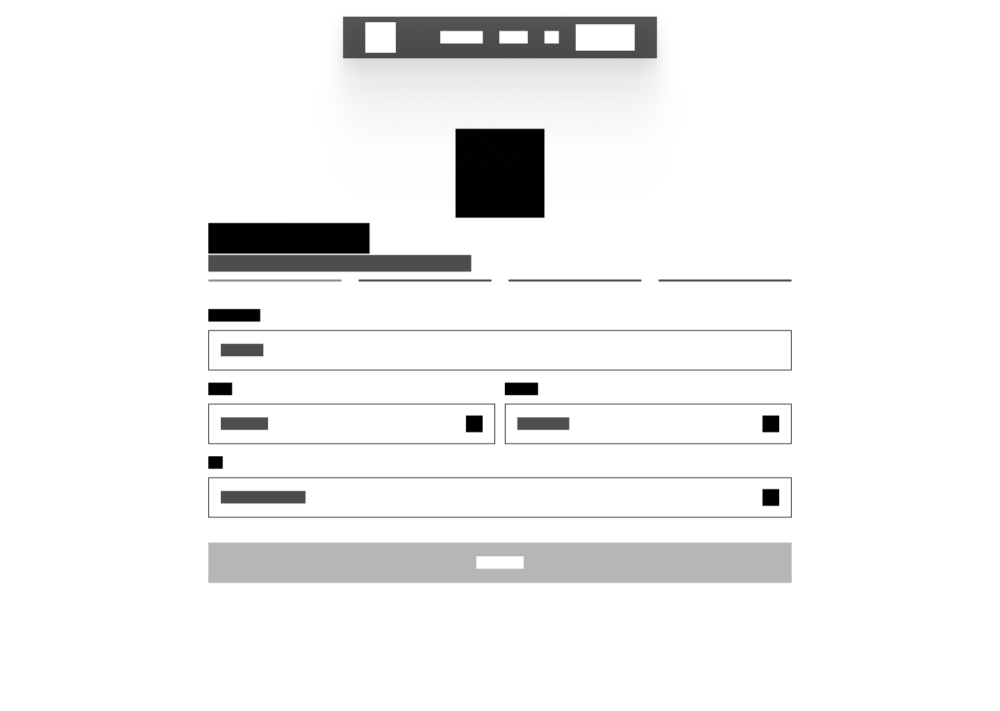

Festify.
A collaborative memory space for events. An intergenerational web app designed to seamlessly collect and archive fragmented event memories.
Osnabrück University of Applied Sciences
Project Semester (Grade 1.0)
UX/UI Design & Research
Team Project
React, Vite, Tailwind CSS,
Supabase, TensorFlow.js
2026

The Fragmented Event Memory
Special events like weddings or birthdays are captured photographically by almost all guests today. The day after, however, a massive UX gap is revealed: the images remain isolated on individual devices or disappear into unstructured messenger group chats.
Messenger Compression
Photos shared via messenger apps undergo heavy compression, resulting in significant quality loss. High-resolution originals remain locked on individual devices.
Homogeneous Hardware Ecosystems
Sharing photos between Android and iOS users is still highly fragmented. File transfers frequently fail due to ecosystem compatibility issues.
Unstructured Cloud Folders
Shared cloud folders (e.g., Dropbox or Google Drive) demand too many manual steps. The administrative burden prevents older or less tech-savvy guests from contributing.
“How do you collect and preserve hundreds of unique event memories from different devices without user friction?”
The Persona Divergence
To identify the real user needs, we conducted quantitative surveys (N=52) and qualitative user interviews. The core insight: a successful solution must accommodate two radically different user groups with contrasting motivations.
From Analog Invitation to Zero-Friction Scan
In the early concept phase, we experimented with a 'phygital' approach: a physical, printed invitation letter with a QR code sent to guests prior to the event.
The Printed Letter
A postal invitation sent in advance. However, user testing quickly revealed that a physical letter was too inflexible for spontaneous events and placed a high administrative burden on the host, leading us to completely drop this medium.
Zero-Friction Access
A direct QR code scan on-site routes guests immediately into the Progressive Web App (PWA). No downloads or account registrations are required for guests, while the host maintains full data control via Supabase Row Level Security (RLS).

UX Architecture & “Invisible AI”
To solve the conflict between Lukas's desire for a curated memory space and Maria's need for maximum simplicity, the system takes over the cognitive load in the background.
Asynchronous Face Recognition
Using client-side TensorFlow.js, faces are recognized and clustered directly on the guest's device during upload. Maria doesn't have to tag anyone manually. The host can automatically filter the gallery by specific guests while fully respecting privacy boundaries.
Highlight Scoring
An automated algorithm filters out duplicates, blurry shots, and screenshot debris. The best memories are automatically prioritized. The backend automatically renders a cinematic recap video of the night using FFmpeg.
UI Design, Usability & Accessibility
The visual interface was systematically optimized for extreme usability (ISO 9241-210) to make it accessible to older generations like Maria while feeling modern and high-end.
Enlarged Tap Targets
All interactive elements, input fields, and buttons have been designed with enlarged tap targets and spacious margins to support users with limited motor control.
Contrast & Typography
Strict compliance with WCAG AA accessibility standards. Large, high-contrast type scales and optimized reading line-heights guarantee legibility under poor event lighting conditions.
Invisible AI Transparency
No confusing AI jargon. Maria is guided through the app with micro-copy and clean status indicators, building immediate trust in the background processes.
Conclusion & Outcome
Festify proves that complex web technology and intergenerational usability can coexist. By eliminating the app store barrier and using client-side AI, we achieved high engagement and seamless photo sharing across all age groups.
“Designing technology to be consistently invisible.”
PWAs beat App Stores
The web is the ultimate equalizer. For one-off events, the willingness to download an app is close to zero. PWAs are the key to high conversion rates in short-term social interactions.
Client-side over Server-side
Privacy is a strong driver of user trust. Performing face recognition client-side and protecting data via Row Level Security (RLS) on Supabase minimizes security concerns from day one.